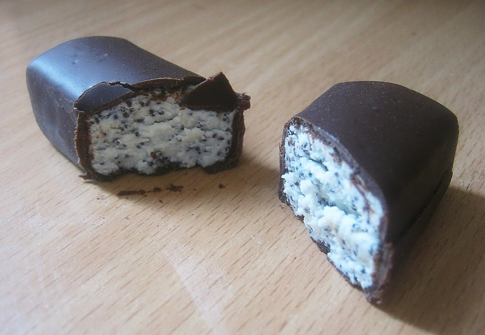

By Bearas - Own work, CC BY 2.5, Original link
Kohuke is a popular curd snack in the Baltic states of Estonia, Latvia and Lithuania. Kohuke is the Estonian name for the snack, it is also known as biezpiena sieriņš in Latvian and varškės sūrelis in Lithuanian. It consists of quark or curd cheese and optionally another filling (such as jam) encased in chocolate. Being a dairy product, it needs to be refrigerated.